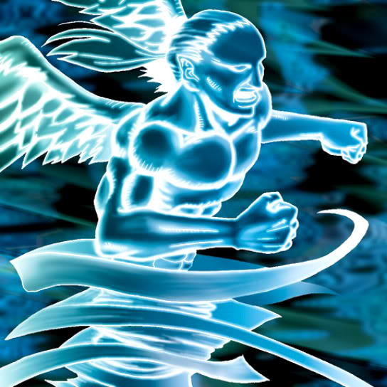

Djinn the Watcher of the Wind

STATS
ATK: 700
DEF: 900DECK COST
Deck Cost per Card: 16Fusion List (6 Possible Fusions)
- Djinn the Watcher of the Wind + Bone Mouse = Magical Ghost
- Djinn the Watcher of the Wind + Dark Assailant = Magical Ghost
- Djinn the Watcher of the Wind + Fiend's Hand = Magical Ghost
- Djinn the Watcher of the Wind + Mech Mole Zombie = Magical Ghost
- Djinn the Watcher of the Wind + Mystic Lamp = Lord of the Lamp
- Djinn the Watcher of the Wind + Skull Servant = Magical Ghost